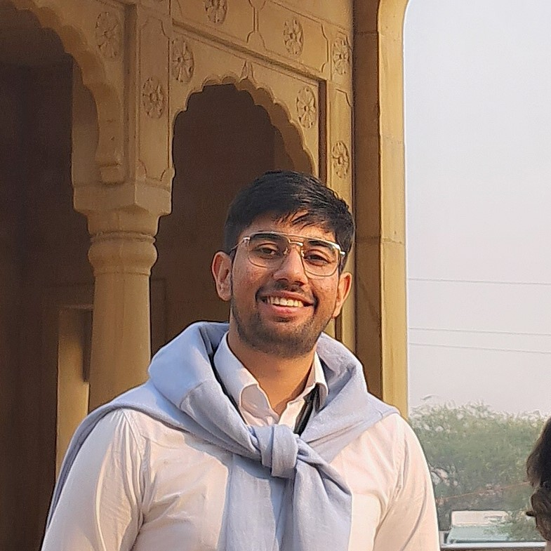

About Me
Hello! I am Akshank Tyagi, a 4th year Physics major Undergrad @ IISc.My interests lie in High Energy Astrophysics phenomenon and Cosmology. Also Particle physics studies that allow for better understanding of these fields. I am also Interested in transients and Compact Object studies (Theoretical or Computational modelling).
